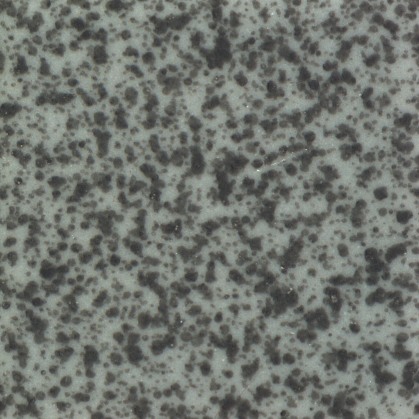
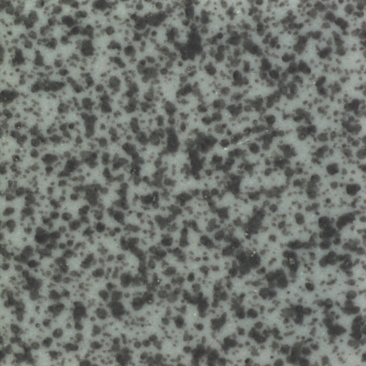
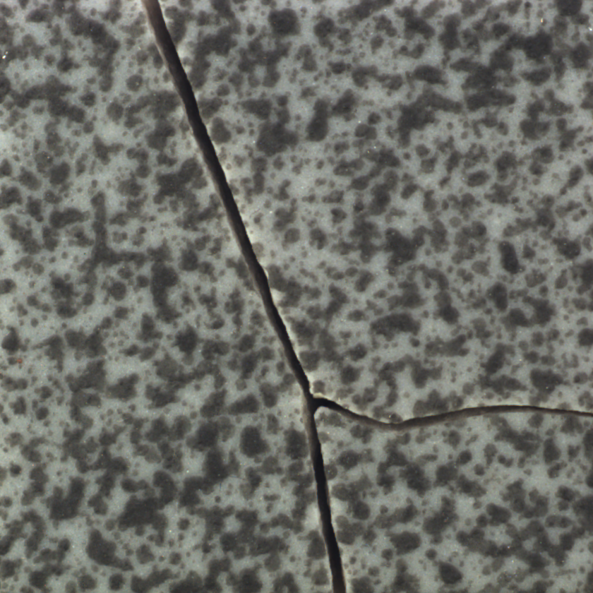
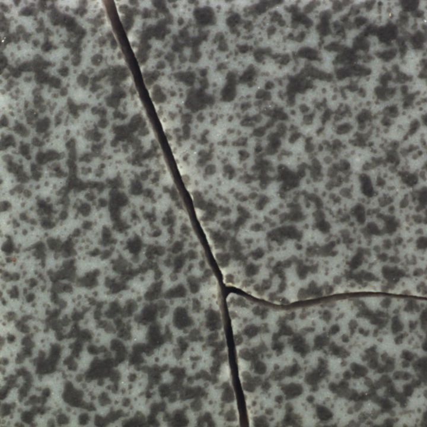
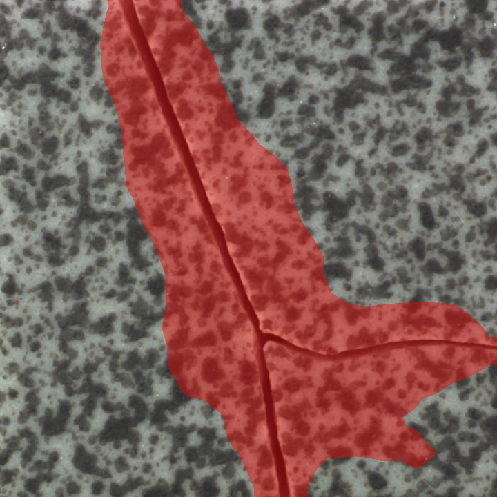

FPGA 实板复测 · V179
真实瓷砖表面照片经 HDMI 输入，由 FPGA 完成颜色校正与检测。
这些是反复使用的 MVTec Tile 公开开发集，不能代表独立盲测或任意彩绘／多材质表现。尚未达到持续 10 FPS 目标。图片判定通过也不代表细裂纹逐像素定位达标。
本次硬件迭代与上一已验证版本
| 指标 | 上一版本 | V179 |
|---|
| 同一开发集图片判对 | 117 / 117 | 117 / 117 |
| 真实 HDMI 连续检测 | 6.666 FPS | 8.170 FPS |
| 固定帧核内自动运行 | 7.539 FPS | 8.021 FPS |
模型文件保持一致。HDMI 观察速度变化为 +22.56%；该比较不等于独立准确率盲测，也不自动构成持续 10 FPS 验收。
同一批 117 张照片，校正前后对照
| 指标 | 未校正 HDMI | FPGA 颜色校正后 |
|---|
| 图片判对 | 84 / 117 | 117 / 117 |
| 良品误报 | 33 / 33 | 0 / 33 |
| 缺陷检出 | 84 / 84 | 84 / 84 |
| 裂纹检出 | 17 / 17 | 17 / 17 |
模型与阈值保持不变；颜色参数来自独立灰阶图。逐像素校正、特征提取与判定均在 FPGA 内完成。
真实良品
板上分数 9783，阈值 10908，判定为正常。评分和全部掩膜像素与独立参考一致。

数据集原始实拍照片 FPGA 校正后实际采集图
FPGA 校正后实际采集图
FPGA 掩膜的显示叠加真实裂纹
板上分数 19273，阈值 10908，判定为缺陷。评分和全部掩膜像素与独立参考一致。

数据集原始实拍照片
FPGA 校正后实际采集图
FPGA 掩膜的显示叠加硬件运行记录
连续观察 239.5 秒，FPGA 自主完成 1957 次检测，平均 8.170 次／秒。检测期间两个 ARM 核保持暂停，共检查 119 次；电脑只播放输入、读取记录和显示结果。
原始照片直接送入检测核的独立数值回归：117 / 117，评分和掩膜逐值一致；固定帧速度 8.021 FPS。
HDMI 实验汇总 · 全部原始记录 · 独立标定参数 · 下载身份记录
查看 117 张逐图判定
照片来自 MVTec AD Tile 原始实拍数据，保留原始文件 SHA256 和来源链接；数据及相关派生证据遵循 CC BY-NC-SA 4.0。灰阶标定图仅为测试夹具，不计入真实照片准确率。